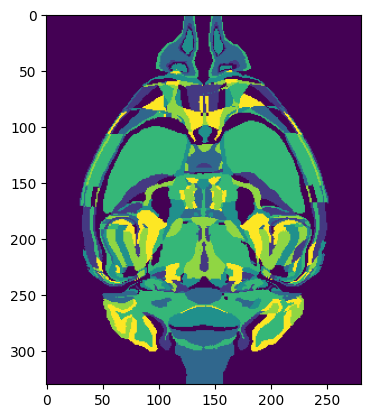

get cell locations given data in a table¶
plan¶
Load the transformed atlas labels. This has a coordinate system in units of microns (~50 micron resolution). And, we used the convention that 0 is in the center of the image.
Get the spatial coordinate of each pixel, and transform it to get the spatial coordinate of each tif file.
[1]:
import numpy as np
import matplotlib.pyplot as plt
from os.path import join
import nibabel as nib
[2]:
registration_output_dir = '/home/abenneck/mounts/bmaproot/nafs/shattuck/RodentToolsData/ZW-DT-1-P56-1/registration_outputs'
label_file = join(registration_output_dir,'transformed_atlas_labels.nii')
# NOTE
# fmost ontology is described here: fmost_ontology.csv in the registration output dir
[3]:
vol = nib.load(label_file)
print(vol.affine)
[[ 5.00000000e+01 0.00000000e+00 0.00000000e+00 -3.59900000e+03]
[ 0.00000000e+00 4.85159988e+01 0.00000000e+00 -8.01073779e+03]
[ 0.00000000e+00 0.00000000e+00 4.85159988e+01 -6.82956006e+03]
[ 0.00000000e+00 0.00000000e+00 0.00000000e+00 1.00000000e+00]]
[4]:
L = np.array(vol.dataobj)
/tmp/ipykernel_1754465/3081927045.py:1: DeprecationWarning: __array__ implementation doesn't accept a copy keyword, so passing copy=False failed. __array__ must implement 'dtype' and 'copy' keyword arguments. To learn more, see the migration guide https://numpy.org/devdocs/numpy_2_0_migration_guide.html#adapting-to-changes-in-the-copy-keyword
L = np.array(vol.dataobj)
[5]:
fig,ax = plt.subplots()
ax.imshow(L[0,L.shape[1]//2]%7)
[5]:
<matplotlib.image.AxesImage at 0x7456c011ce20>

[6]:
o = vol.affine[:3,-1]
d = np.diag(vol.affine[:3,:3])
n = np.array(vol.shape[-3:])
xL = [np.arange(ni)*di + oi for ni,di,oi in zip(n,d,o)]
tif files¶
We need to know the voxel spacing in the tif files.
[7]:
dtif = np.array([2.0, 1.866, 1.866]) # todo, add more decimal places if we have them
otif = np.array([0,0,0])
ntif = np.array([3600,8587,7321]) # 3600 slices 8587 rows 7321 slices
some example data¶
[8]:
nexample = 20
c = np.random.randint(low=0,high=ntif-1,size=(nexample,3))
# c is expected to be what comes out of the pixel file
[18]:
# convert it to microns using our convention for coordinate origin
c_microns = c*dtif - (ntif-1)/2*dtif
# with the origin in the center, if the voxel index were (0,0,0) the location in microns woul dnot be (0,0,0)
# it would be -the size over
c_microns
[18]:
array([[-1207. , -513.15 , -4644.474],
[ 687. , -7798.014, -2968.806],
[ 439. , -7547.97 , 2892.3 ],
[ 2229. , 1235.292, 205.26 ],
[ 2781. , -4584.762, 2476.182],
[ 1313. , -3493.152, 895.68 ],
[-3383. , -2319.438, -3955.92 ],
[ 2091. , 2748.618, -6652.29 ],
[ 549. , -598.986, 6320.142],
[ -863. , 4245.15 , -6266.028],
[-2721. , -7605.816, -2099.25 ],
[ 2053. , -4120.128, 432.912],
[ 971. , -3095.694, 3685.35 ],
[ -463. , -988.98 , 3261.768],
[ 227. , 2513.502, 5749.146],
[ 857. , -7704.714, -4084.674],
[ -521. , 4898.25 , 5004.612],
[-2965. , 7924.902, -811.71 ],
[ 3085. , -7876.386, -5769.672],
[ 2155. , -6857.55 , -5027.004]])
[20]:
o
[20]:
array([-3599. , -8010.73779297, -6829.56005859])
[17]:
# now figure out what voxel it corresponds to in our nifti label file
# if c_microns == 0 (the location of first voxel), then c_vox == 0
c_vox = (c_microns - o)/d
c_vox
[17]:
array([[ 47.84 , 154.53846097, 45.03846382],
[ 85.72 , 4.38461122, 79.57692619],
[ 80.76 , 9.5384575 , 200.38462138],
[116.56 , 190.57692336, 145.00000467],
[127.6 , 70.61538204, 191.8076981 ],
[ 98.24 , 93.11538257, 159.23077424],
[ 4.32 , 117.30769084, 59.23077185],
[113.8 , 221.7692318 , 3.65384745],
[ 82.96 , 152.76923015, 271.03846922],
[ 54.72 , 252.61538639, 11.6153861 ],
[ 17.56 , 8.34614978, 97.50000354],
[113.04 , 80.19230534, 149.69231248],
[ 91.4 , 101.30769046, 216.73077562],
[ 62.72 , 144.73076842, 208.00000618],
[ 76.52 , 216.92307784, 259.26923817],
[ 89.12 , 6.30768819, 56.57692564],
[ 61.56 , 266.07692517, 243.92308396],
[ 12.68 , 328.46154205, 124.03846571],
[133.68 , 2.76922657, 21.84615558],
[115.08 , 23.76922707, 37.15384825]])
[16]:
# now round this to the nearest voxel, and evaluate the label
c_vox_int = np.round(c_vox).astype(int)
c_vox_int
[16]:
array([[ 48, 155, 45],
[ 86, 4, 80],
[ 81, 10, 200],
[117, 191, 145],
[128, 71, 192],
[ 98, 93, 159],
[ 4, 117, 59],
[114, 222, 4],
[ 83, 153, 271],
[ 55, 253, 12],
[ 18, 8, 98],
[113, 80, 150],
[ 91, 101, 217],
[ 63, 145, 208],
[ 77, 217, 259],
[ 89, 6, 57],
[ 62, 266, 244],
[ 13, 328, 124],
[134, 3, 22],
[115, 24, 37]])
[13]:
# evaluate L at these locations
[15]:
cell_anatomical_labels = L[(np.zeros(c.shape[0],dtype=int), c_vox_int[:,0], c_vox_int[:,1], c_vox_int[:,2])]
cell_anatomical_labels
[15]:
array([804, 0, 0, 716, 0, 465, 0, 0, 0, 0, 0, 843, 740,
690, 0, 0, 0, 0, 0, 0], dtype=uint16)
[ ]:
# add this to your datafame
[ ]:
[ ]:
[ ]:
[ ]:
[ ]:
[ ]:
[ ]:
[ ]:
[ ]:
[ ]: